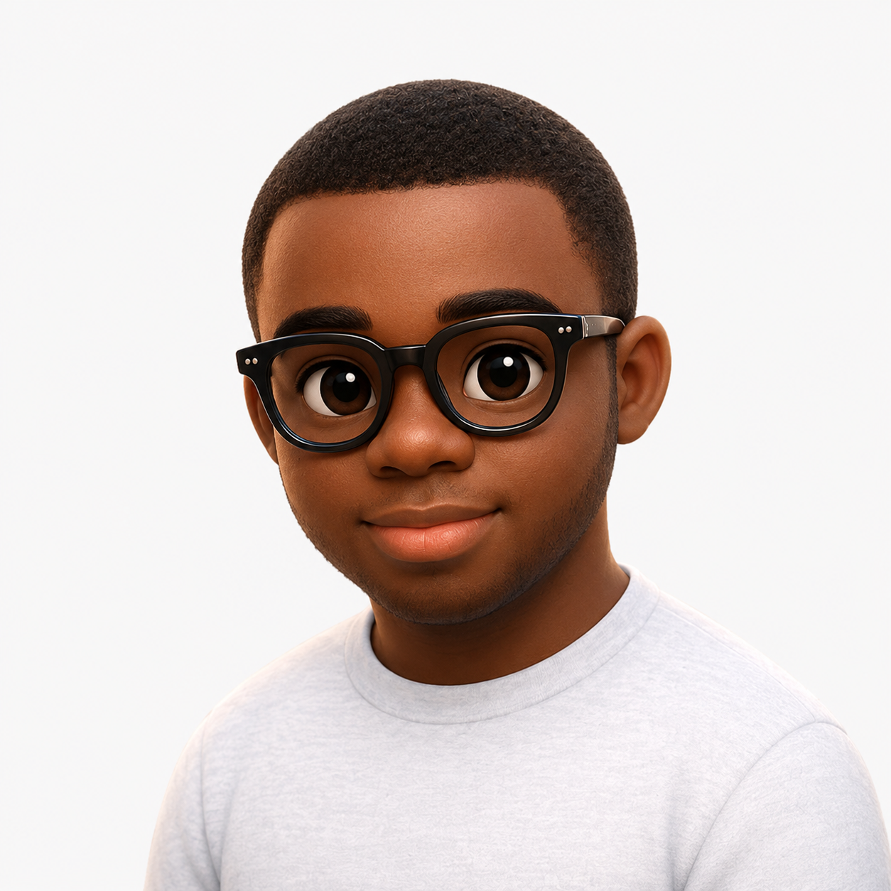

Peer-Reviewed Journal • Elsevier
2024

Hi, I'm Elijah 👋🏾
MPhil Candidate @ Ashesi
AI Research Engineer.
I build machine learning systems that do clever things, studying how they learn, reason, and work together. For over four years, I have applied this work to healthcare, biometrics, and education.
Selected Work
Things I've built.
TRACE Reasoning & Safety Gates
Enforces citation-grounded reasoning, contraindication checks, and combination therapies.
92% Compliance Across 5,000 Records
Reduced clinician workflow from 7 to 2 minutes via CDS Hooks and FHIR integration.
+15% Accuracy with Wavelet & PCA
Hybrid DWT-PCA algorithm isolating unmasked upper-facial features.
1,000+ Daily Attendance Verifications
Published in Elsevier's Scientific African and awarded Best Ashesi CS Thesis.
Adaptive Scheduling & Spaced Repetition
Adaptive scheduling engine adjusting targets based on study reflection data.
Agent-Driven Study Recommendations
Aggregates deadlines, assignments, and proximity signals into a unified dashboard.
90% End-to-End Success Rate
Coordinates specialized agents for architecture, coding, review, and runtime repair.
Sandboxed Runtime Validation
Automated error correction loops with instant cloud sandbox deployment.
Adversarial GAN Alignment
Generative adversarial alignment of wav2vec 2.0 frames with unpaired phoneme sequences.
Low-Resource Acoustic Optimization
Unsupervised segmenters optimized for low-resource African language structures.
34.28% WER on Ghanaian Accents
Reduced ASR error from 85% baseline to 34% on Twi-influenced English audio.
51.77 BLEU Score on 130K+ Pairs
Custom Transformer model with multi-head attention reaching 51.77 BLEU.
Academic Output
Publications & Research.
Awarded Best CS Thesis '23 • Ashesi University
2023
Face Recognition under Multiple Constraints with Application to Attendance Management
Interdisciplinary Journal • iGEM 2022
2022
An Affordable & Fast Approach to Gold Prospecting in Ghana
Research
Research Interests & Goals.
I am interested in understanding how machines can become genuinely adaptive learners rather than static models frozen in time. To me, intelligence is a dynamic computational process, not a fixed set of capabilities acquired during pretraining and never revised again. My research focuses on building systems that can accumulate durable capability from experience, discover reusable abstractions, and compose knowledge across multiple models and agents. Rather than making today’s architectures incrementally better, I want to explore what underlying computational mechanisms—from dynamic memory and world models to active exploration—will allow machines to participate in their own learning.
A central question I care deeply about is machine discovery: whether an AI system can recognize what it does not know, construct informative experiments, and derive genuinely new abstractions rather than just reproducing its training data. At the same time, I believe a theory of intelligence that only works under idealized conditions is fundamentally incomplete. Consequential domains like clinical healthcare decision-support, low-resource African speech, and real-world institutions serve as my proving grounds, where deterministic safety gates, uncertainty, and human collaboration are part of the architecture itself. Ultimately, my work is guided by the conviction that the purpose of building more capable intelligence is not power itself, but knowledge, service, and human flourishing.
Skills
Technical Foundations.
Programming Languages
Core languages used in systems and algorithms.
Machine Learning & Computing
Deep learning frameworks and scientific computing.
Have something worth building?
I am open to consulting and advisory roles on AI research, machine intelligence systems, and technical engineering. If you have an interesting challenge or a project worth building, my inbox is always open.
Email
eb.adutwum@gmail.com